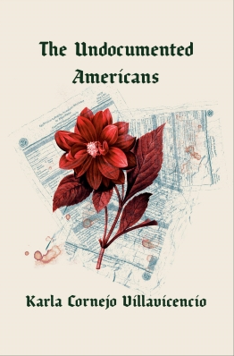
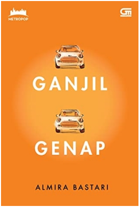

Hai friends, bingung mau ngapain? Tidak ada kerjaan? Mau keluar tapi mager? Mau tau gak kegiatan apa yang seru, tidak perlu keluar, tapi kalian serasa jalan-jalan kesana kemari?
Yups. Membaca buku adalah satu-satunya jawaban. Dengan membaca buku, kalian tidak perlu keluar rumah. Namun, dengan membaca buku, kalian bisa berjalan kesana-kemari tanpa harus keluar rumah dengan imajinasi kalian. Dan pastinya dengan membaca buku, kalian akan mendapatkan keseruan yang amat sangat dengan menjadikan diri kalian sebagai tokoh yang ada di dalam buku tersebut.
Selain itu, dengan membaca buku, kalian bisa mendapatkan ilmu yang bermanfaat dan memperluas pengetahuan kalian dengan banyak hal yang ada di dunia. Seperti pepatah “Buku Adalah Jendela Dunia” yang akan membuka pikiran kalian tentang segala macam permasalah yang ada di dunia ini.
Dilansir dari Healthline, membaca buku secara rutin bahkan bermanfaat bagi fisik dan mental. Beberapa manfaatnya adalah memperkuat fungsi otak, meningkatkan kemampuan berempati, mengurangi stres, dan masih banyak lagi.
Nah, yuks disimak beberapa buku rilisan internasional dan nasional berikut.

Rekomendasi buku rilisan 2020 pertama datang dari Karla C. Villavicencio.Buku dengan judul “The Undocumented Americans” ini merupakan auto biografi dari Karla, seorang imigran tak berdokumen resmi di Amerika yang berhasil lulus dari Harvard. Terdapat cerita dari imigran Amerika lainnya yang tersebar di New York, Miami, Cleveland, New Haven, dan Flint. Di dalam bukuini, narasi dari penulis benar - benar menggambarkan bagaimana kehidupan di Amerika yang sebenarnya beserta konflik yang ada di dalamnya.
Rekomendasibukurilisan 2020 berikutnyadatangdari Indonesia.Buku pertama berjudul “Lagi Probation” karya debut Samuel Ray yang dirilis pada bulan Februari 2020. Samuel Ray merupakan seorang HRD (Human Resources Development) yang dikenal di Twitter dan Instagram dengan nama akun @srl789. Di akunnya, ia biasa memberikan bantuan seputar karier yang ditanyakan oleh netizen. Nah, buku “Lagi Probation” ini cocok dibaca untuk para fresh graduate yang sedang dalam perjalanan untuk membangun karier. Buku ini berisi tips dan trik mencari kerja dan juga untuk survive di dunia kerja, dituliskan dengan bahasa yang mudah dicerna oleh generasi milenial.

Rekomendasi buku rilisan terbaru berikutnya adalah “Ganjil Genap” karya Almira Bastari. Hubungan Gala yang sudah dijalani selama belasan tahun kandas begitu saja, lalu tiba-tiba adiknya ingin segera menikah.Buku ini bercerita tentang kisah percintaan yang cukup rumit, tapi bisa relate dengan apa yang sedang kamu dan banyak orang alami di usia 20-an.Jika ingin mencari bacaan yang cukup ringan, kamu bisa memilih novel ini. Sebelum “Ganjil Genap”, Almira Bastari sudah menerbitkan novel dengan judul “Melbourne (Wedding) Marathon” (2017) dan juga “Resign!” (2018).